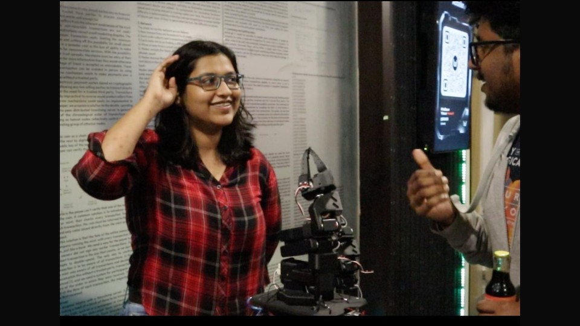
My earliest happy memories are those of reading books. I don't recall much of what I did when I was younger except going to school, coming back and immersing myself in books. I read whatever I could get my hands on, from fiction to sci-fi. I got exposed to astronomy in fifth grade and it felt like a new world had opened up. I spent time outside of school and homework reading astronomy books and teaching myself how to identify constellations. I spent whatever time I could stargazing, tracking meteor showers and reading about astronomy. For my 15th birthday, my dad took me to a stargazing trip and it was the best thing I had experienced by then.
Insane skies, using a telescope for the first time, that trip was incredible. My interest soon shifted from astronomy to space and physics and I read whatever I could find related to that. I read books by Dr. Hawking, Carl Sagan, Carlo Rovelli. I'm not sure how much I understood those books back then but I do remember the feeling of awe they left me with. An uncle of mine bought me a telescope when I was 16 and then every evening was me fiddling with it, learning how to use it.
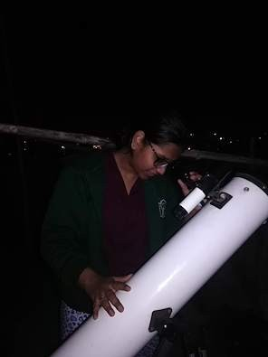
You could only really see the moon through it and that too only for a few seconds because once in frame, the moon would fly past so damn fast but it was worth all of the hassle.
School was bad. I remember being really miserable most of my school life and I found my solace in my book, and interests. I was good at writing. While most teachers really only cared about my grades at school, I found some kindred spirits in English teachers across classes. I also developed a fast friendship with the librarian who used to recommend books for me to read.
11th and 12th grade were probably the worst two years of my short life yet. These were the years I had to prepare for the JEE exams (engineering entrance exams in India). It was a grueling process. I had long hours at school and then 6 hours of coaching for these exams. I used to be an A+ scorer but I couldn't keep up with this rigorous coaching program and my grades started slipping. This was unacceptable to my parents and teachers and for these two years, the only thing I focused on was the fact that I would be able to leave the house once the exams are over. This was a really suffocating period of my life and killed any confidence I had in myself. At some point, I stopped studying entirely convinced that no matter what I did, no engineering college would accept me. It was the most defeated I have ever been in my life and I have no intention of going back.
Anyway, I gave those exams and got some college admits. Nothing impressive but the relief I had at being able to leave my home and my then current environment was unparalleled.
I started college with a load of optimism. Living on my own felt very liberating. It was daunting too but I was excited. I wanted to nail down a specific thing/domain to pursue in my college life largely because it felt like it would be too easy to waste a lot of years doing surface-level things and never really exploring depth. To choose this one thing, I joined a bunch of college clubs in my first year. By and large, it was the robotics club which had my attention. It was incredibly exciting being able to program things to move IN REAL LIFE. I dropped out of all the other clubs and was always at the robotics club after classes.
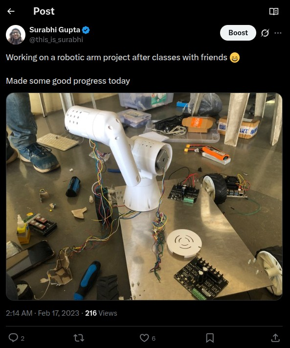
The club ended up disbanding due to some conflict amongst the seniors and they shelved the project but I was hooked to robotics. I left the club (too much drama about leadership roles lol) and decided to learn robotics on my own. I did some courses for fundamentals, then some projects in simulation. I then wanted to build a hardware robot because that is the real deal. So I started saving up for the parts to build a cheap one.
On a separate note, a project I undertook with some of my friends was the exploration of the extent to which activated carbon could be reused. Activated carbon is used in RO filters and every six months (at least in India), that filter needs to be replaced because the carbon within has been saturated with the contaminants it has adsorped. We were trying to figure out if there was a way this used carbon could be cleaned and reused. We consulted some professors from the chemical engineering department and after some discussion and research, decided to test out ultrasonication as a potential method.
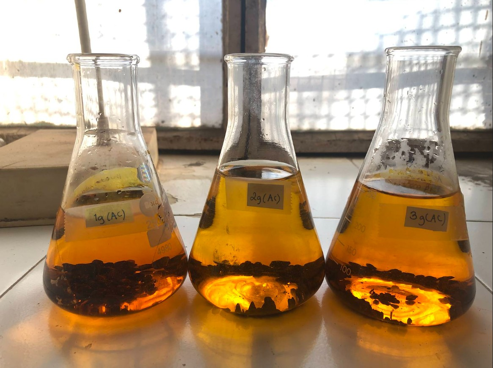
Ultrasonication is a method in which sound waves with frequencies above 20k Hz are applied to displace or agitate particles. It is often used as a method of cleaning jewelry and lab equipment and electronics. We wanted to see whether it was any good at cleaning saturated activated charcoal. We ran experiments over that semester on this and found out that ultrasonication manages to restore the soiled activated carbon to around 80% of its former adsorption capabilities. While it doesn't completely restore it, the result did mean that the activated carbon could be reused after being cleaned instead of having to be thrown away. Ultrasonication could increase the life of the activated carbon used in RO filters. We presented this work at a materials science conference the next year.
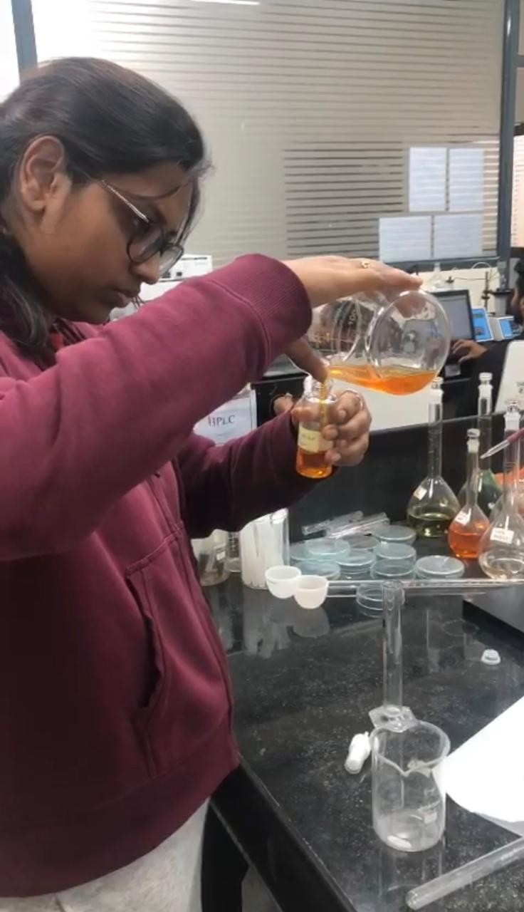
At this point, I was building out small, silly projects with cheap hardware to learn robotics. Some friends and I pooled in money to buy a 2D LiDAR and were trying to build a mapping robot using it.
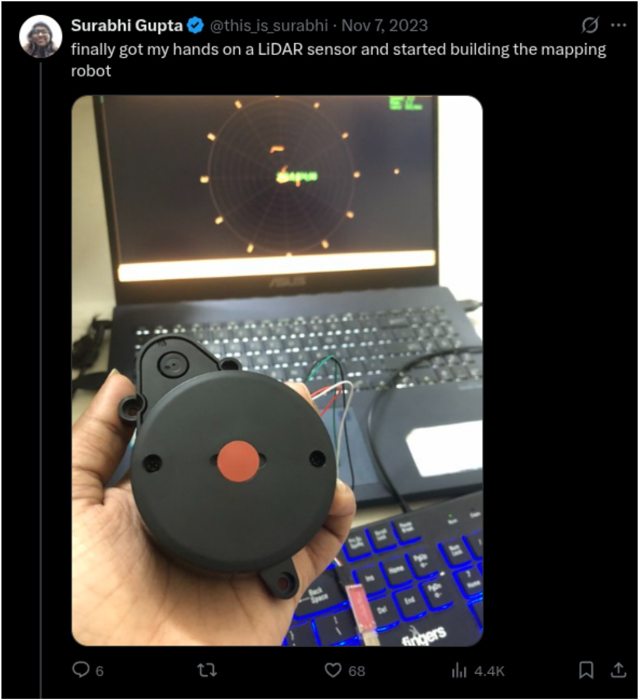
I took part in buildspace nights & weekends s4 with this project. Nights and weekends was a six week remote program conducted by Farza Majeed at buildspace in which you went from an idea to a prototype/demo. Each week participants were to make progress on their projects and share those. I didn't end up following through on this project though.
However, I tweeted about the project progress and this led me to my first robotics internship at Peppermint Robotics.
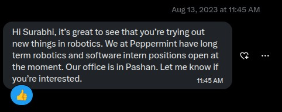
The internship was a lot of fun and it was quite a steep learning curve since I didn't really have any experience with real robots. The two months I spent there were better than anything I had experienced in college. People were very kind and the work was incredibly rewarding. My internship at Peppermint Robotics made me consider that building robots was something I could do for a living.
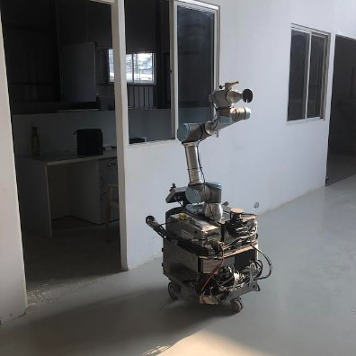
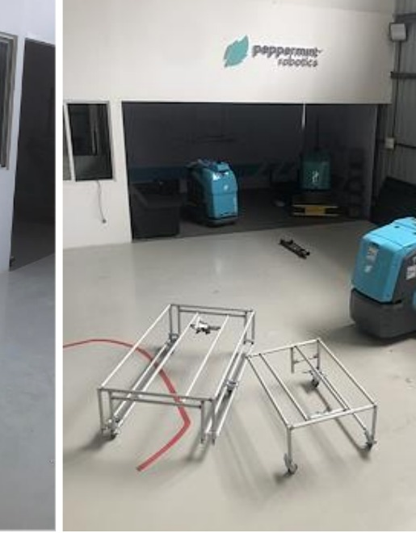
The next season of nights & weekends happened to coincide with my college break. I wanted to participate and this time, see an idea through, from concept to prototype in six weeks. I had been saving up for a small robotic arm and I decided to build it out. This time, for consistency I started putting out daily updates on my project.
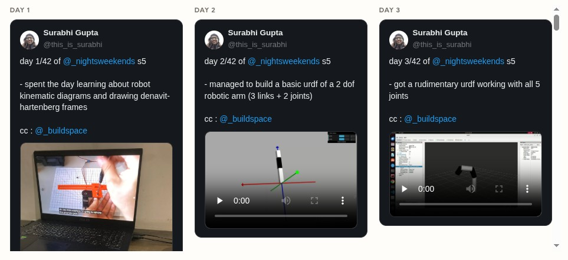
It was an intense and awesome build. I studied theory, modelled the arm in simulation, tested hardware, broke hardware, fixed it, added joints and ended up with a robot arm after the 42-day daily build.
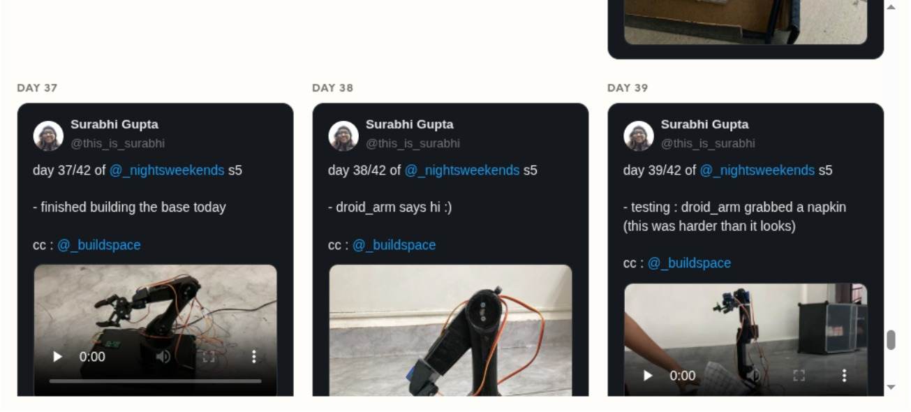
Farza and co. seemed to like my project and I was one of the hardware grantees for the season.
Third year brought about interesting work. The CTO of Peppermint robotics had left to start his own robotics company and he reached out to me to work for him. I managed to get a month away from college and spent it working at his very early stage startup. There were just the three of us, the founder, one electronics person and me. I was in charge of building the robotics software stack from scratch.
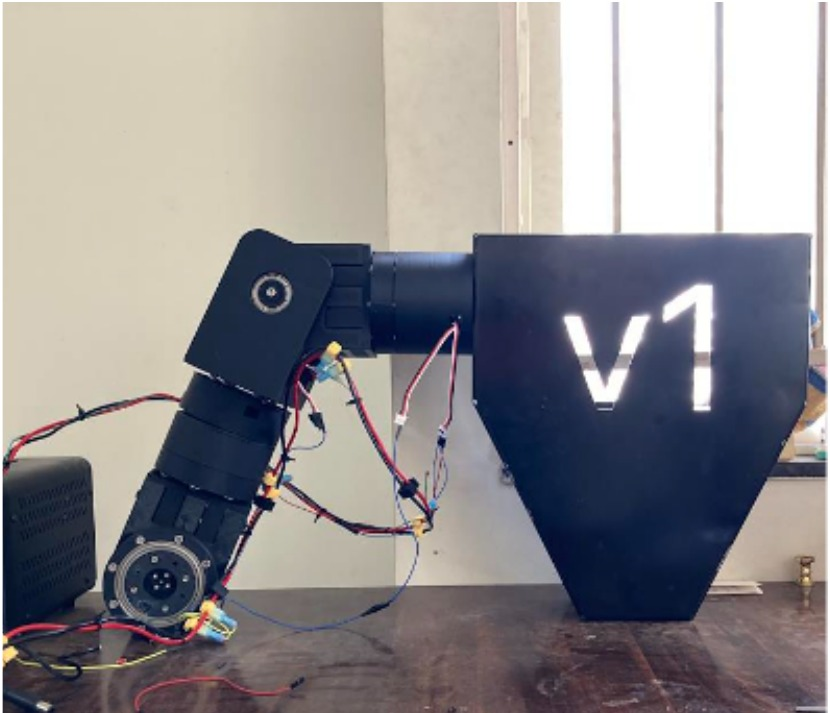
That month was probably the most intense period of work I have experienced. Given that I knew that I only had a month, I was determined to build and ship a complete teleoperation stack for this humanoid before I left. I started from scratch, built out things in simulation first since the physical robot was being built. This was a period of complete self-learning and it was quite liberating. Once the robot body was readied, I started testing all the joints and calibration. I really struggled with the calibration part. It took quite a few attempts on the whiteboard for the founder to explain it to me.
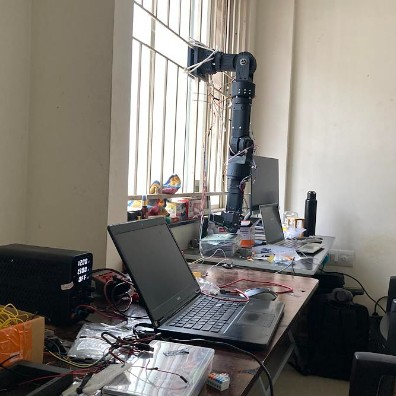
I did manage to build, test and deploy the teleoperation stack on the robot along with some perception work on the stereo cameras. Then I had to return to college after this break. College was easily the most boring part of my life. I was doing things outside of it.
Around May 2025, I was approached by Localhost. They were planning on running a hackerhouse in Bangalore in June and wanted to see if I was a fit. I got into the program and headed to Bangalore after having wrapped up my sixth semester. It was a month-long program where 10 people building different things would live and work in the same villa and at the end of it all, present their work at the demo day.
Localhost was quite a fun experience. Living with cool folks was in itself quite a novel experience. There were three of us hardware builders and we developed quite a good bond. I put up Big Hero 6 (absolute fav movie!) posters outside my room.
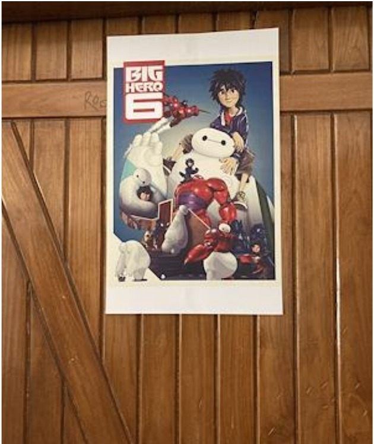
During my stay here, I built out the version 0 of a home assistant robot. Similar to my buildspace project, I put out daily updates of my progress.
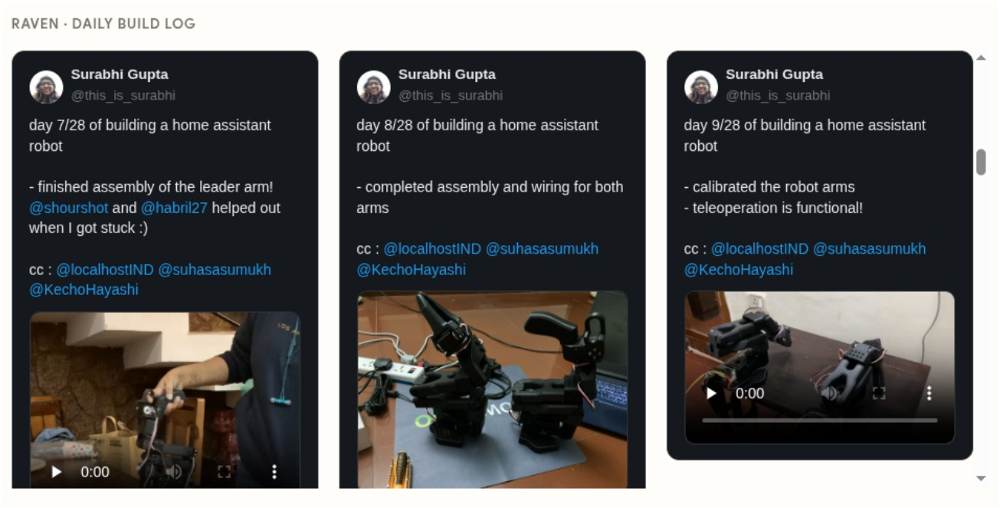
Localhost introduced me to a lot of people, we always had people coming and visiting the house and chatting to us. It was quite a wide variety of folks I got the chance to meet. Founders and investors and people doing all sorts of interesting things. Being in Bangalore also gave me the chance to go about and meet people who so far I had only been talking with on Twitter.
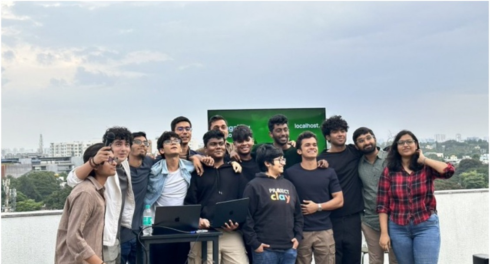
Though I met quite a lot of people, there was one hardware meetup which I hold dear. One of the folks invited me to a hardware meetup which he hosts occasionally. I remember leaving that meetup feeling warm and floaty. It was at someone's house and the people were very warm. In one corner, someone was talking about their attempts at building a lightsaber, another person was showing a very tiny robot they had built, then there was a different discussion about the problems of sourcing electronics in India. It was surreal and on the ride back to the house, I was left with the distinct feeling that these kinds of small magical pockets existed in the world and I had just been invited to one.
I built out a basic version of my robot and named it RAVEN (because a friend said that the gripper reminded them of a bird's beak) during the month-long hackerhouse.
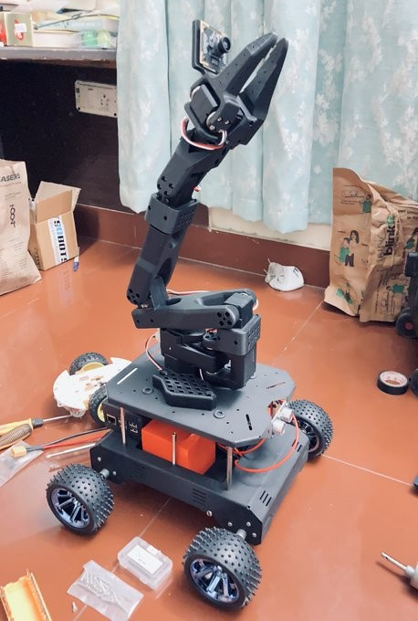
Demo day was a blast. We had quite the turnout for the event as all of us presented our work and I spoke to a crazy number of people.
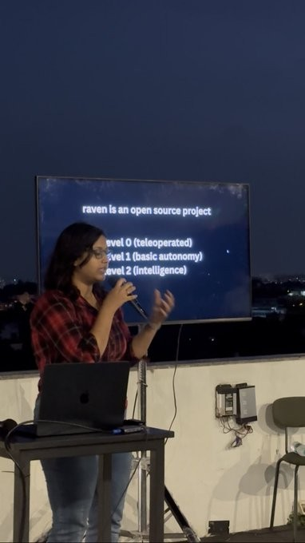
My college offers us the choice between an internship and academic electives for the final year. So I had been reaching out to robotics companies and interviewing to get an internship since I had had quite enough of the college classroom experience. Right after localhost, I started interning at Earthsense, which is an agri-robotics company. I interned here for almost the entirety of my final year. It's a small and supportive team solving hard, technical problems.
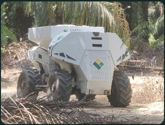
The main thing I have come face to face over and over again, working at Earthsense, is just how difficult it is to get outdoor robot autonomy to work.
A friend of mine had approached me saying he wanted to explore if one can control a robot using an iPad/iPhone and wanted to work with me to build a proof-of-concept for this. I took a month off from my internship and flew to Bangalore to work on this. The core idea was, the iPad has an in-built LiDAR and it would be interesting to be able to use it as a sensor for a robot. Regular devices can communicate with a robot over simple serial communication. However, the iOS ecosystem prevents that. There is no straightforward way of just plugging a robot into an iPhone and controlling it. We came up with a few approaches for this and spent the month of Jan hacking together a solution making use of USB-NCM and MIDI. We got it working but it didn't turn out to be very reliable.
I am working full-time as a robotics engineer at Earthsense now. It's been around 3 months since I have transitioned into a full-time role. In all honesty, it doesn't feel that different from my internship. I have come to realise that in startups (or at least the places I have worked at), there really isn't much of a hierarchy thing when it comes to interns and engineers. You own stuff, ship stuff, ask for help when stuck.
A good chunk of my time at Earthsense has been spent doing one of 2 things : 1. Being assigned to problems I had no idea how to solve and being trusted to solve them (which I have done) and 2. Picking up problems to solve/things to build on my own and then seeing those through. It's a loose, self-directed culture and it works for me. This has done wonders for my confidence since any real confidence gain for me has come from doing things which have looked very intimidating at first. The fear exists only because of the uncertainty. This is something I am getting better at recognising.
I have also lately gotten deeply into control systems and have been spending my time relearning linear algebra and dabbling in controllers. Right now I am working on a project where I am implementing some linear controllers from scratch on the classic inverted pendulum. I am also studying the non-linear energy shaping to actually implement the swing-up of the pendulum from the ground up. Over the next coming months, I intend on going deeper and playing around with controls. The next controller I want to understand is the model predictive controller. I will be implementing on the openpilot controls challenge (autonomous driving challenge) as well as trying it on a hexapod to get it to balance and walk.